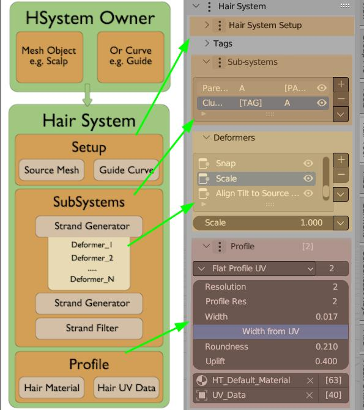
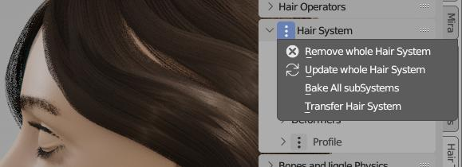
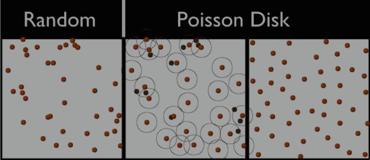
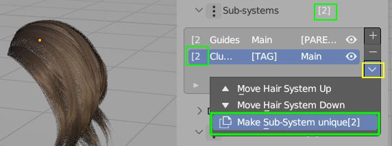

Hair System¶
Overview¶

Hair System assists you in creating procedural hair strands in a non-destructive way, utilizing Blender's Geometry Nodes technology.
Hair System is made from:
- A setup section to assign a guide curve and source mesh
- Hair sub-systems with generators and Deformers to create and modify strands
- A hair profile to add geometry, UVs, and materials to strands
Hair Sub-Systems in stack can communicate together with usage of Tags - this help to describe which Hair System is affecting which strands.
Hair System is located in Right Sidebar → Hair Tool Tab → Hair System Panel. Click [+] to add Hair System to selected mesh or curve object.
 On image above we have Two Hair Systems named:
On image above we have Two Hair Systems named: Parent, Child. You can see Child system is made from: Strand Generator, Noise, Clump, Set Radius etc. deformers. Whole system is guided by: HairCurve guide - second input at very top
Strands generated with Hair Systems are then passed to hair profile generation system, which convert these strands to hair-cards.
One Minute Hair Setup¶
Below I show you demo of how to setup game ready hair in 1 minute:
Full setup (with audio) starting from scalp mesh, drawing few guide strands and generation of denser interpolated child strands
Text description of steps:
- Select scalp mesh, and go to Draw Hair Panel > Enable Draw Hair
- Hold D key, and draw guide curves with LMB (default Hair Material and UVs will be automatically assigned to them)
- You may need to adjust flat profile width
- Add Hair System > Strand Generator type,
- In Hair System > Deformers sub-panel > Strand Generator > increase strands density (value depends on size of your object)
- Adding Deformers:
- Noise - it will break the even look of hair
- Align Tilt - it will force hair cards to face scalp surface
- Optional Radius Set - it will taper the haircards
- Ctrl+Shift+H > Convert Hair to Mesh (or you can use Finalize, to create mesh copy of HSystem)
That is it, you can now export generated mesh to Game. If you want, you can restore curve hair object with Ctrl+Shift+H > 'Restore Hair Object' - and continue working on it.
Two Minute Hair Setup¶
In video below we make hairstyle with split.
Full setup - starting from scalp mesh, and ending with mesh haircards ready for export
Above we used option of selecting strands by mesh island > see Strand Selection section.
Transfer Hair System¶
Hair System can be assigned to Mesh or Curve Hair object, depending on which object is selected when you add Hair System. If you want to change Hair System 'owner' you can use Transfer Hair System operator.

Hair System that generates hair-cards (in center above) can be assigned to:
Source/Base Mesh mesh from which strands are spawned from (often scalp mesh)
Empty Mesh helper, without geometry, usually linked with Source Mesh and Guide Curve
Guide Curve curve object that guides strands
Empty Curve helper, without geometry, (usually linked with Source Mesh and Guide Curve)
Hair system transfer possibilities:
| Current Owner | Transfer To | Result |
|---|---|---|
| Guide Curve | Base Mesh | Hair System will be moved to Base Mesh Surface (usually scalp) |
| Guide Curve | Empty Mesh | Hair System will be moved to new, empty mesh object |
| Empty Curve | Base Mesh | Hair System will be moved to Base Mesh Surface (usually scalp) |
| Base Mesh | Guide Curve | Hair System will be moved to Guide Curve |
| Base Mesh | Empty Curve | Hair System will be moved to Empty Curve Hair object |
| Base Mesh | Empty Mesh | Hair System will be moved to Empty Mesh object |
| Empty Mesh | Guide Curve | Hair System will be moved to Guide Curve |
| Empty Mesh | Base Mesh | Hair System will be moved to Base Mesh |
Visually, there should not be any noticeable difference. However, the owner of the Hair System will change
User cases when you want to use Transfer Hair System:
- if you want to 'Bake' curves generated by Hair System to curve, but it is assigned to Mesh (meshes cannot receive curves geometry). In that case you can transfer Hair System to Empty Curve, and then bake it to it
- if hair interpolation is broken (e.g. stops working after you select and try to sculpt Guide Curve. See note in Hair Interpolation section
General Operations¶

- Remove whole Hair System - removes all Hair Systems, Setup and Profile modifiers from object
- Update Whole Hair System - updates Setup, Profile, Hair SubSystems (without deformers) nodes. All nodes are recreated from scratch, it is destructive operation and may break your Hair setup!
- Bake All SubSystems - bake curves generated by All Hair sub-Systems into 'real' curves geometry. This works only on hair curve type of objects (try: Ctr+Shift+H > Transfer Hair System: to Empty Curve, or to Guide Curve)
- Transfer Hair System - explained here
Sub-Systems Types¶
After adding a Hair Sub-System, you'll see the first slot in the deformer stack is added automatically. This is determined by the selected hair sub-system type.
Strands Generator¶
It will grow strands, from Base Mesh surface. You can control parameters like: resolution, density, length, interpolation (Parent Child relation must be set) etc. These strands are affected by all subsequent deformers in current system stack
Set parent Tags and enable interplation option, so that generated strands will follow these Tagged strands. See Child Parent Setup
Align to Surface Normal¶
Align to Surface Normal - option changes how the interplation works. Do not confuse with Align Tilt To Source Surface
Strands Distribution¶
Poisson distribution is a better way to spread things out evenly than just randomly placing them.
Here's why:
Imagine you're trying to place hair strands on a surface.
-
Random placement: You might end up with clumps of hair in some areas and gaps in others.
-
Poisson distribution: This method makes sure the hair is spread out more evenly. It does this by removing any hair strands that are too close together.

Left: notice the clumping of hair roots; Center: Poisson distribution helps to remove these clumped dots (colored in black), by removing roots that are closer than Min Distance parameter. Right: Increase Density parameter to fill up the empty spots
Strands Filter¶
This hair (sub)System type lets you affect existing hair strands - whether these strands are:
- 'real' (for example generated with Hair Drawing),
- or generated procedurally by another Hair subSystem > Strands Generator.
This way you can e.g. add Noise effect to all existing strands (or make them curl, taper etc).
There is option to affect only selected strands, by filtering them with TAGs.
Imagine you want to modify two Hair Systems, by adding Set Radius or Align Tilt. Instead of applying these deformers to each individual Hair subSystem, you can utilize the Filter System to affect all strands simultaneously.
Demo of applying 'Scale' deformer to strands generated with Right Tag
Note: If no filter tag is specified, then all strands will be affected
Strands From Grid Surface¶
This type of Strand Generator, will guide strands using guide mesh (grid mesh, made of quads only). Root of strands will be placed:
- on edge loop marked as Sharp (Ctrl+E -> Mark Sharp)
- or on crease edge (Shift+E -> Crease Edge).
These strands can be affected by all subsequent deformers in current system stack
In video above - top, boundary edge loop was marked as sharp
Note: Notice how guide grid, in video above, has uneven topology - getting dense to the right. This is important when adjusting 'Uniform Spacing' option
Note: To mask-out placement of roots, just plugin in vertex group mask into 'Placement Mask' input
Examples of proper grid guide topology:
 Check out the FAQ to see examples of wrong mesh topology
Check out the FAQ to see examples of wrong mesh topology
Interpolated Strands¶
This Strand Generator, will use existing curves add extra strands in between them. In that case order of strand matter!
In video above I used drawn strands to guide the 'Interpolated Strands' generator (video is narrated)
Note: If order of your strands is wrong, and Automatic Spline Sorting option fails, you can use Sort Strands by Stroke operator to manually fix the order (see video above)
Child - Parent setup¶
Linking two Hair SubSystems, with Child-Parent relation, enables capabilities such as: interpolation, clumping, curls, braids, twist and others.
Use Tags to link two Hair SubSystems, establishing a parent-child relationship.
In the video above, I show how to make the red strands (called "ParentSys") the parent (guide) for the yellow strands (named "Child"). You can use any tag name you want. In this example, I used "RED".
Note: Parent Hair System has to be placed above Child System in the stack, or else Child strands won't 'see' the Parent strands
Hair Interpolation¶
To enable hair interpolation, current Hair System has to have parent - see above.
After that Toggle Interpolation button will be accessible (enabled by default) in first deformer - Strands Generator properties
Note: In some cases interpolation may behave erratically (e.g interpolation breaks when you select Guide Curve). The most likely cause is - cyclic dependency:
- Guide curve depends on your base mesh (usually scalp),
- Base Mesh (with Hair System attached) depends on guide curve (through enabled interpolation to Parent - Guide Curve).
To fix it and break the cyclic dependency use Transfer Hair System and move Hair System to either Empty Mesh or Guide Curve.
Since Hair Tool 3.0 and later versions, strands interpolation operates within areas surrounded by mesh islands - meaning, if you want to make hairstyle with split:
- split scalp mesh in two, without separating to new object, (e.g. select edge loop, that divides the scalp in half - and press 'V' to rip it). Now child strands will not cross this edge.
In video above I have cut mesh in 4 parts (visualised with 4 colors). Strands won't cross islands boundaries
Note: If you want to make hairstyle with split, you can use Select By Island to select guide strands from specific island
Note: instead of splitting the edges physically, you can use the Edges split modifier
Hair sub-System menu¶

You can copy settings from any hair system, and paste to target using entries above.
Bake¶
Procedurally generated strands cannot be groomed. First convert them into 'real' geometry with 'Bake' operator. This will bake: active (and preceding) Hair sub-Systems or All Hair sub-systems into 'real' curve geometry, that can then be groomed using Blender 'Curve Sculpt' mode.
Note: Baking works only if Hair System is attached to hair curve type of objects! If not the use: Ctr+Shift+H > Transfer Hair System > to Empty Curve or to Guide Curve)
Curves in video cannot be groomed, since they are generated procedurally. After baking, you can groom them without issues
Update Node Pack¶
Update selected Hair Components (geometry node setup) to its latest version, for example after updating add-on
Copy/Paste Hair System¶
Copy Hair System settings from: Active Hair sub-System or All sub-Systems
Paste Hair System settings to: Active Hair sub-System or to All sub-Systems
Copying All SubSystems (and profile settings) from one object to another. Receiving object has to have at least one Hair subSystem attached. Also make sure both objects share same vertex groups, similar sharp (or crease) edges - if you copy Curves From Grid type of setup
Switch Hair System Type¶
Switch Hair System Type - for example from Strands Generator to Strands Filter.
 Pasting Hair System settings (or instancing object that uses Hair System), will create linked copy. This means that change performed on new copy, will affect original Hair subSystem too. Number of Hair System users is displayed next to Hair Tag (green box in image above)
Note: You can unlink Hair System, by clicking on 'users number' (see green box above)
Tags¶
Think of Tags as labels we apply to the strands in a Hair System. They enable us to establish child-parent relations or manipulate specific strands with strands filter. Why won't we use system name for that functionality? The reason is, that you can assign multiple tags to same strand e.g.:
- Hair System A strands Tags:
LONGandCURLY. - Hair System B strands Tags:
LONG
Now you can modify strands tagged with LONG label - using Strands Filter, without having to create same deformers on Hair System A then B twice.
Tags can be also assigned to subset of strands from within Hair System with Assign Tag deformer.
 In image above we tagged 'First' Hair System
In image above we tagged 'First' Hair System A with label. 'Second' and 'Third' system are linked to it - which allows us to use e.g. interpolation on them. Note: Guide curves received GUIDE tag automatically
Tag can be assigned in few ways:
- by typing it in next to system name see
Atag in image above. If system has no tag assigned then[TAG]label is shown - by using Assign Tag deformer
- you can also assign tags to Hair System guide object (new Curve Hair) using Tags Panel. See Below
Tags Panel¶
In video above we create Tag A, then assign selected curves to tag A using Assign button
Note: Assigning Tags only works on new Hair Curves. To be able to select individual curves, like in video above, you have to use Hair Modeling mode. For now only selection works from all the available Modeling Tools
Input Masks¶
You can mask most of the hair deformers inputs with various kind of effects. Multiple masks can be added.
Note: The order matters: first top mask is evaluated then next to the bottom
To add mask click drop down menu icon on right and pick mask type
Border Edge Distance¶
Border Edge Distance: mask an effect based on strands distance to border of source mesh. Above we used Align Tilt to Mesh Border deformer, to align tilt only on strands that are closest to mesh border. It has invert option too.
Curve Attribute¶
Curve Attribute: Use Curve attribute to mask hair effect. This is intended to be used with Edit Curve Attribute feature in HTool
Vertex Group/Texture¶
Vertex Group/Texture: Use vertex group or texture for input masking
Object Vertex Group/Texture¶
Same as above, but samples vertex group/texture from custom object
Radius Mask¶
Radius Mask: Mask an effect based on strand radius. In video above I reduced noise on braids, at thinner places.
Offset/Gain¶
Mask Offset Gain: Not useful by itself, but placed after another mask, it can increase the mask contrast (gain) or brightness (offset)
Invert¶
Invert: Not useful by itself, but placed after another mask, it will invert the previous mask effect
Randomize¶
Randomize: Outputs random value for each strand.
Random value will be picked from within [x-RandRange; x+RandRange] bounds, where x - is any input value - e.g. from vertex group mask
You can disable lower/upper bound using </> buttons, thus limiting Random value range.
- Rand Range - 0 - no randomization; 1 - maximum randomization
- Variance < 0.5 outputs mostly smaller values, from within given range,
- Variance == 0.5 all random values are drawn uniformly, from within given range,
- Variance < 0.5 outputs mostly bigger values, from within given range,
- Use Parent IDs - if enabled each child strand will inherit random value from its closest parent.
Length Mask¶
- Assigns Min value to the shortest strands,
- Assigns Max value to the longest strands.
- Swapping Min and Max values will invert the effect
Procedural Mask¶
Procedural Mask: Use procedural noise texture to randomize hair look. No need for UVs
- Min, Max - bring these values closer together to get sharper noise transition,
- Scale - the bigger scale the more detailed the texture will be,
- Distort - distorts the noise,
- Offset - offset the noise sampling position
Influence Range¶
Special mask that allows to modulate influence of deformer over strand length (e.g. taper only tip of strand). 0 - no effect, 1 - maximum effect
Types of Influence range masks:
- Constant - the effect is uniform along the whole strand length
- Simple - gradually changes the influence from 0 to 100%. Influence can be flipped using invert button
- Quadratic - gives more detailed control: modulate effect independently at strand beginning, center and end
- Profile Curve - most detailed control using profile curve
Updating¶
After updating Hair Tool add-on, you may need to update your Hair Setup:
- There is option to update Individual Hair System elements (Deformers, Masks, Profiles etc.) - located in Deformers dropdown menu
- Setup and Profile node (green and blue box on image below)
- Update Whole Hair System located in General Menu - this will update all nodes, in all Hair Systems for all objects on scene. Be warned though: add-on will try to recreate whole node tree structure from scratch, so this may now always work.
 You may update deformer, profile, mask etc. nodes using menu above
You may update deformer, profile, mask etc. nodes using menu above
Note:: Using individual node packs update (only Deformers, or only Masks etc.) method is usually safer.
Limitations¶
Only One UV box can be assigned to profile - you can use Mesh Profile with multiple meshes as a workaround for randomizing UVs(No longer the case Since HT 2.44)- Hair Modeling Tools do not work (except selection)
Hair interpolation is using booleans under the hood. Because of this, interpolation may fail if boolean fails. And Interpolation may be slow on heavy base meshes (I recommend using lowpoly hair surface meshes). Hopefully I will find better way in the future, to create interpolations.(No longer the case since Blender 3.5 and Hair Tool 2.44)
FAQ¶
I get Errors in console¶
If you open old blend file with old Hair Tool setup, after you updated Hair Tool, you may get some errors, and UI wont be drawn correctly. Use Update Whole Hair System located in General Menu - this will update all nodes, in all Hair Systems for all objects on scene
Warning this is potentially destructive operation, since whole node tree will be recreated from scratch. Updated nodes behavior may change, resulting in slightly different hair look
Hair Interpolation won't work¶
In some cases interpolation may behave erratically (e.g interpolation breaks when you select Guide Curve). The most likely cause is - cyclic dependency between Base Mesh with attached Hair System and Guide Curve.
See note in Hair Interpolation section.
To fix the cyclic dependency use Transfer Hair System and move Hair System to either: Empty Mesh or Guide Curve.